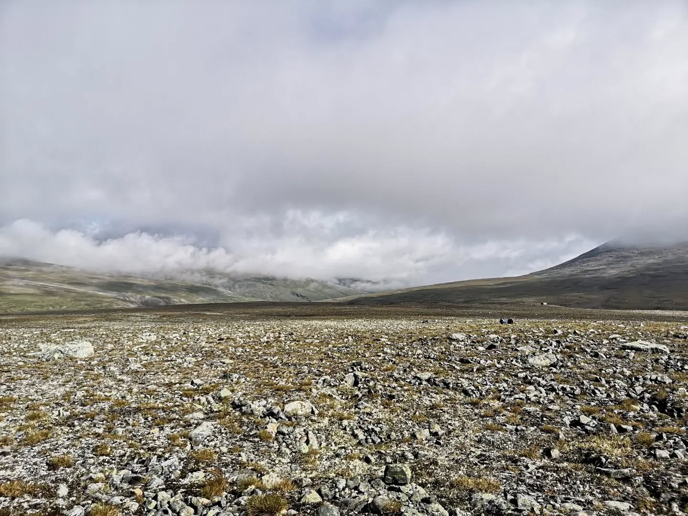
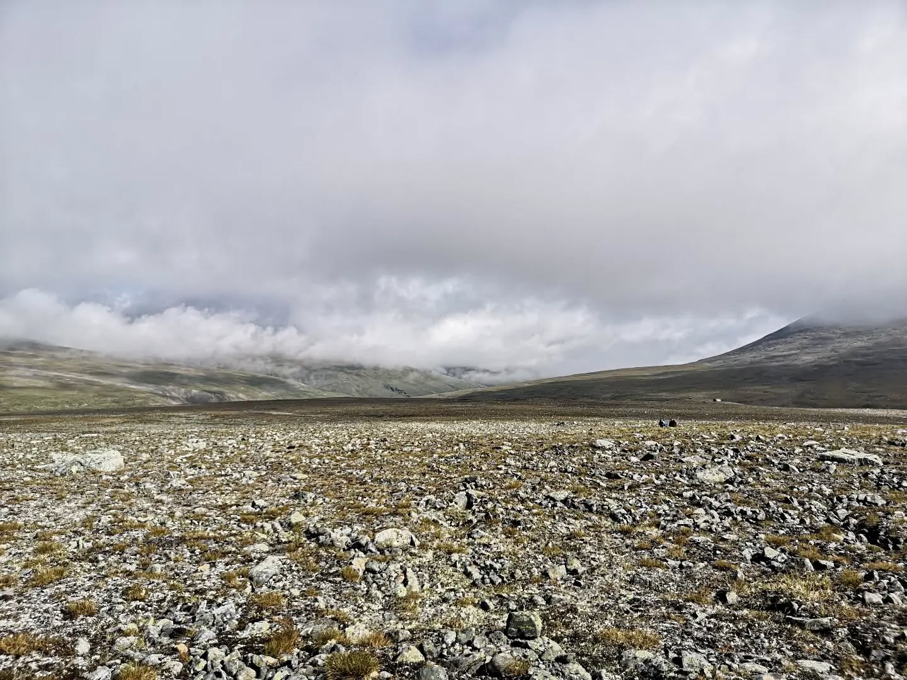
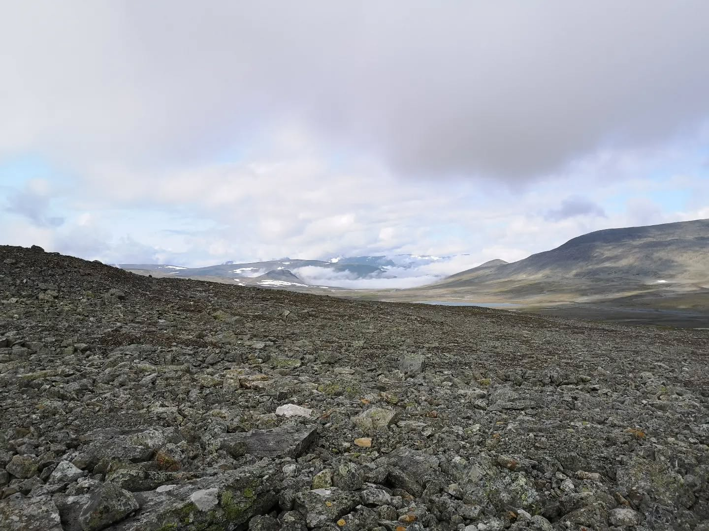
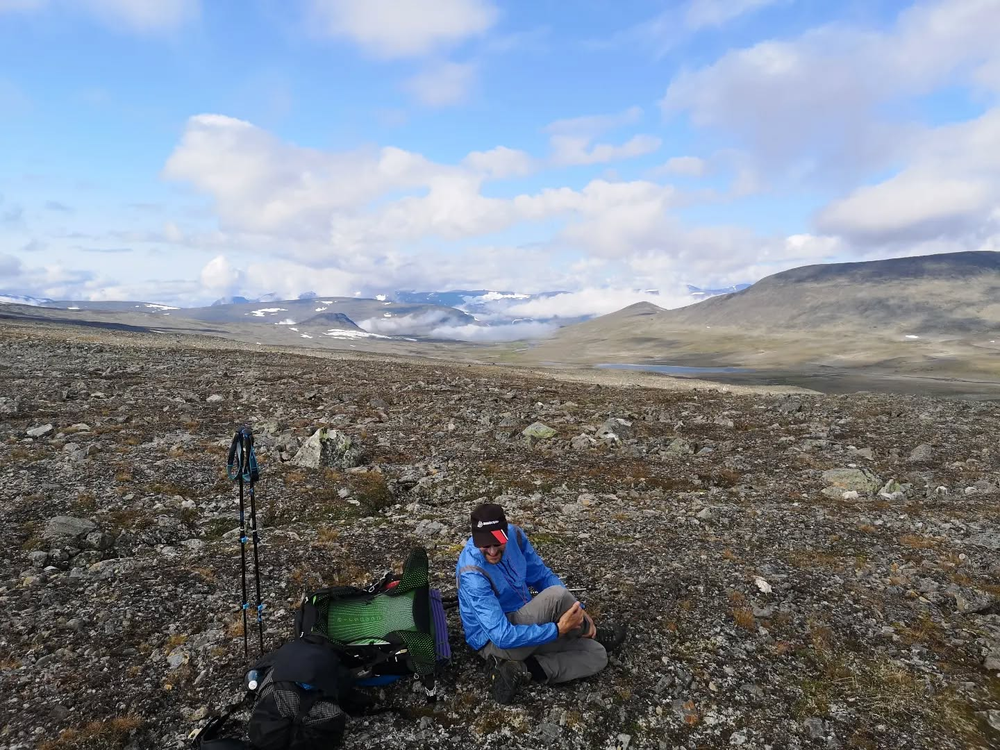
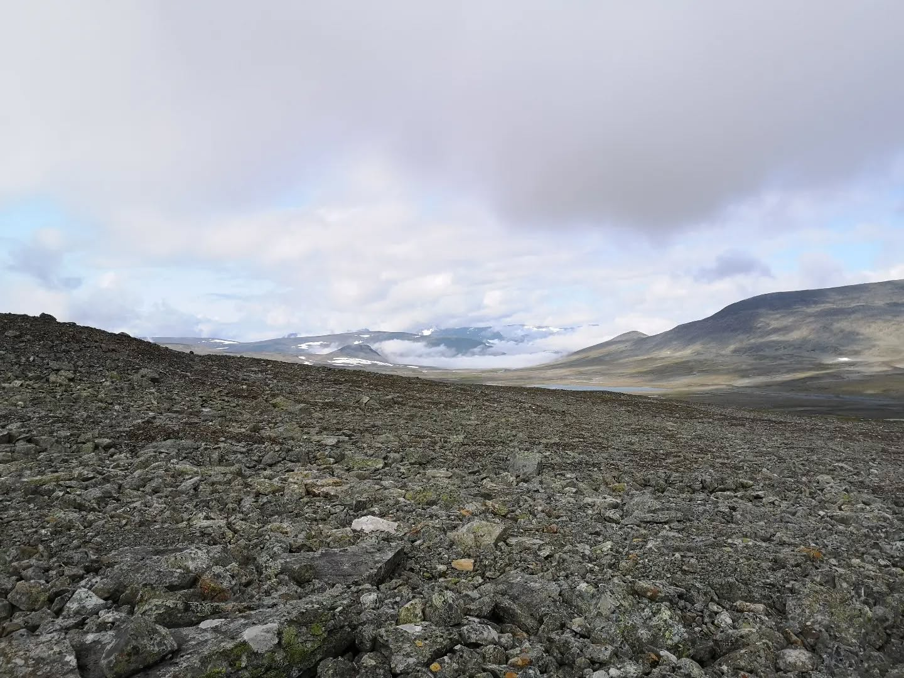
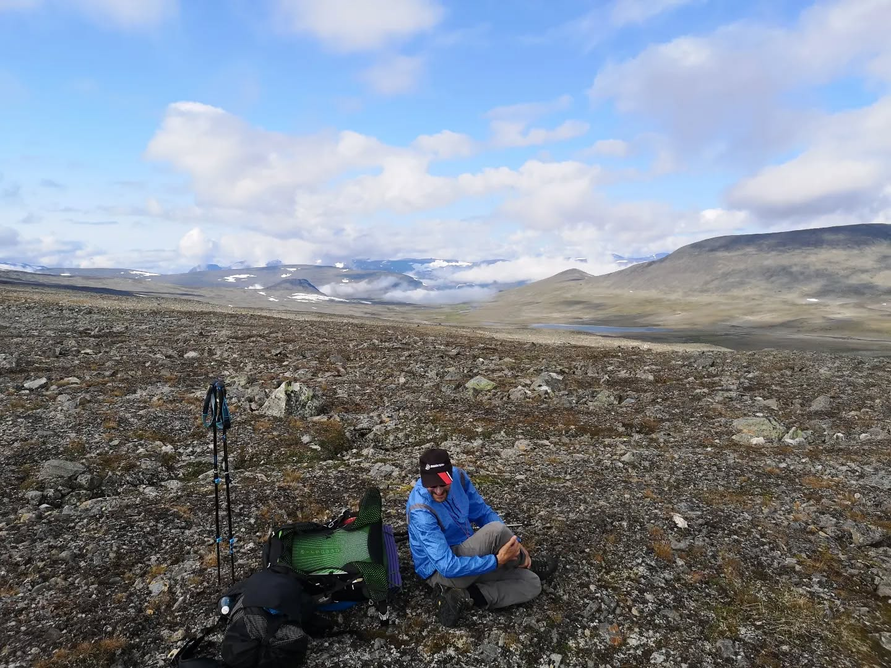
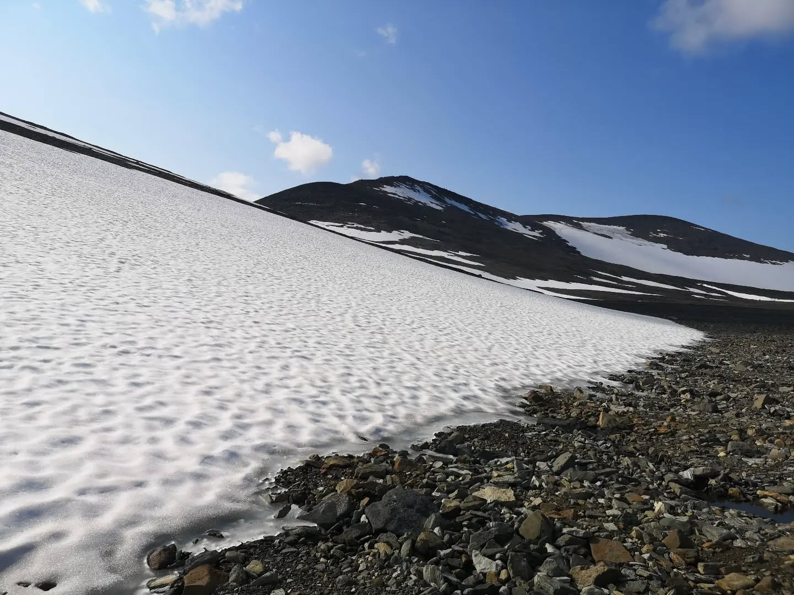
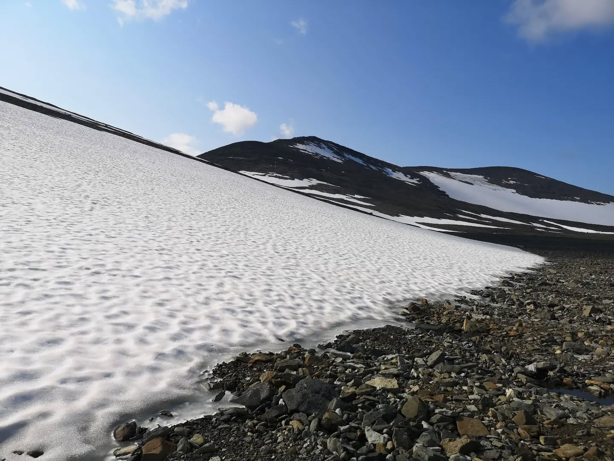
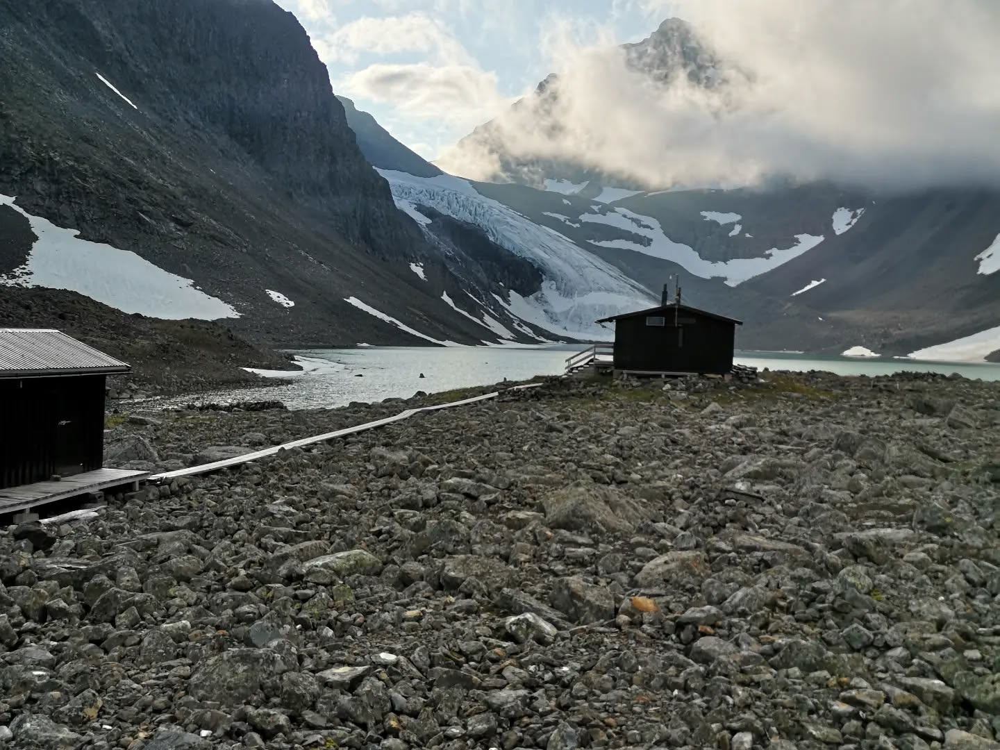
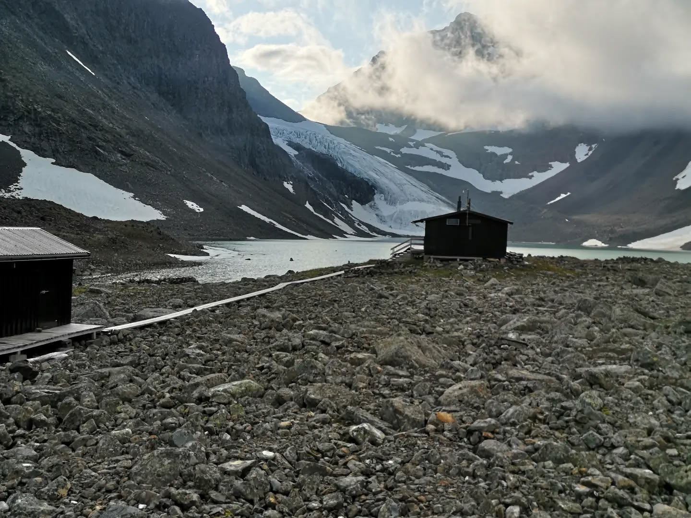

Day 2 of 6 day Lapland adventure. 6h hike through difficult terrain, no path and loads of water...
Day 2 of 6 day Lapland adventure. 6h hike through difficult terrain, no path and loads of water bodies and lose rocks. The goal was to cross an unnamed pass into the Tarfala valley. We started our hike in total fog, but an hour after we broke camp, the sun burned all the clouds away and we suddenly saw the vast mountain wilderness we had been waking into. It was an amazing feeling. We climbed the pass and were rewarded with even more amazing views of three glaciers and the Tarfala valley. Tonight we sleep in a hut and we just had sauna with glacier view. Non plus ultra.
 

 



 


 
